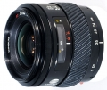

器材库 > 35mm画幅AF变焦镜头 > AF 24-50/4

详细规格
镜头类型
标准变焦镜头
发布日期
未知
焦距
24mm-50mm
最大光圈
f/4
最小光圈
f/22
视角（对角）
84.00-47.00
镜头结构
7片/7组
最大放大倍率
0.18
驱动马达
AF马达
滤镜口径
55mm
镜头卡口
Minolta/Konica-Minolta/Sony AF
防抖
否
颜色
黑色
尺寸
69.00x60.00mm
重量
285g
drlyly752013-07-31 10:54
我用美能达2012-12-14 20:224.25 分
操作性 4.50耐用性 4.00性价比 4.00解像力 4.50色彩还原 4.50机械结构 4.00
chrislt2012-06-28 23:544.33 分
操作性 4.50耐用性 4.00性价比 4.50解像力 4.50色彩还原 4.50机械结构 4.00
WYJ12152010-06-06 16:014.75 分
操作性 4.50耐用性 5.00性价比 5.00解像力 4.50色彩还原 4.50机械结构 5.00
云的那边2009-09-19 13:524.33 分
操作性 4.00耐用性 4.00性价比 5.00解像力 4.00色彩还原 5.00机械结构 4.00
lwl5252009-09-16 23:363.67 分
操作性 4.00耐用性 3.50性价比 4.50解像力 3.50色彩还原 4.00机械结构 2.50
沈阳酸菜2007-03-12 17:074.33 分
操作性 4.50耐用性 4.50性价比 3.50解像力 4.50色彩还原 4.50机械结构 4.50
禽流感人2005-12-14 14:163.75 分
操作性 3.00耐用性 3.50性价比 4.50解像力 4.50色彩还原 4.50机械结构 2.50
vos9082005-12-13 17:454.67 分
操作性 4.50耐用性 4.50性价比 5.00解像力 5.00色彩还原 5.00机械结构 4.00
litaohit2005-01-15 22:534 分
操作性 4.00耐用性 3.50性价比 4.50解像力 4.50色彩还原 4.00机械结构 3.50
小鸟2004-08-10 09:094.42 分
操作性 5.00耐用性 4.00性价比 5.00解像力 5.00色彩还原 4.50机械结构 3.00
sc2012004-05-05 00:114.83 分
操作性 5.00耐用性 5.00性价比 5.00解像力 4.50色彩还原 4.50机械结构 5.00
ajo2003-06-08 14:153.92 分
操作性 3.50耐用性 3.50性价比 4.00解像力 4.50色彩还原 4.50机械结构 3.50
wmdai2003-04-08 15:493.75 分
操作性 4.00耐用性 3.50性价比 3.00解像力 4.00色彩还原 4.00机械结构 4.00
产品图 / 样片
外观图
评测 / 相关文章
该产品暂无存档的评测文章